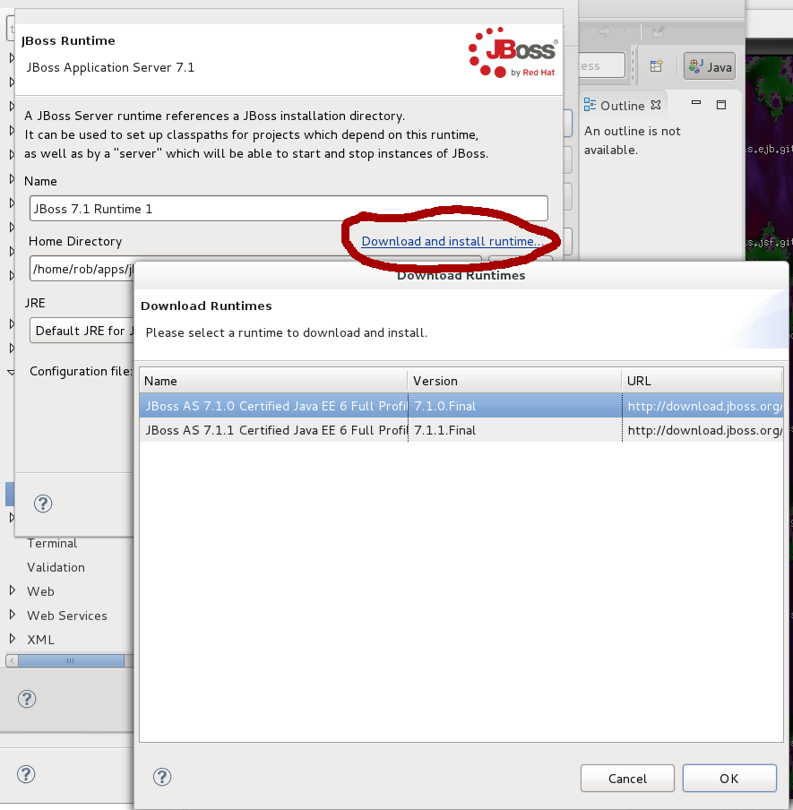

Downloading JBoss Runtimes |
|
|
New Runtime Wizard allows app-server downloads |
The new runtime wizard now links in with the runtime component's ability to download an application server runtime and initialize the server that corresponds to it. The dialog will be filtered to only show runtimes that match the server runtime being created.  Related Jira |
Disable deployment option changes when artifacts are already deployed |
|
|
Editor page becomes disabled |
Users never should be changing the deployment locations of already-deployed artifacts. This might cause the tools to deploy multiple copies in different locations due to architectural issues. However, enough users were doing this that it was decided to disable changes to a server's deployment settings unless a server was fully synchronized with no modules deployed. This will help users to undeploy relevant modules first before making these changes. Related Jira |
Deployment of zipped artifacts sent file twice |
|
|
Performance Improvement |
It was discovered that zipped deployment was sending the same file over the wire twice. This has been fixed. Related Jira |
New Fileset Wizard Preview Broken |
|
|
UI Fix |
Due to a regression during heavy refactors, the preview dialog of a new fileset wizard, which is in charge of showing the first dozen or so files that match the given pattern, stopped showing results. This has been fixed, and matching elements will now be shown as always. Related Jira |
Project Archives Fixes |
|
|
Easy enablement / disablement |
Enablement and disablement of project archives has been simplified. Now, simply right-click on your project, and select Configure -> Add Project Archives Support or Remove. This gives a more easy front end to users looking to enable or disable this feature of their project. Related Jira |
|
Project Archives View doesn't clear after project deletion |
Projects with the Project Archvies features were not being fully removed from the model or the UI after the project was deleted. This has been fixed by adding a deletion participant and ensuring that the view has the proper checks in it during the workspace change to clear the view properly. Related Jira |